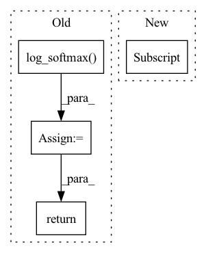

Pattern ID :2587
Before Change
def forward(self, x, with_logits=False):
h = self.encoder(x)
logits = self.fc(h)
log_probs = F.log_softmax( logits, dim=1)
if with_logits:
return log_probs, logits
return log_probs
def compute_error(self, x, action):
log_probs, logits = self.forward(x, with_logits=True)After Change
self._fc = nn.Linear(encoder.get_feature_size(), action_size)
def forward(self, x: torch.Tensor) -> torch.Tensor:
return self.compute_log_probs_with_logits(x)[0]
def compute_log_probs_with_logits(
self, x: torch.Tensor
) -> Tuple[torch.Tensor, torch.Tensor]:In pattern: SUPERPATTERN
Frequency: 3
Non-data size: 4
Instances Fragment ID: 14971989
Project Name: takuseno/d3rlpy
Commit Name: 9ccb6121c0baead0ffb85b64207c4fe6dc5fd5b5
Time: 2021-01-01
Author: takuma.seno@gmail.com
File Name: d3rlpy/models/torch/imitators.py
M Class Name: DiscreteImitator
N Class Name: DiscreteImitator
M Method Name: forward(2)
N Method Name: forward(3)
M Parent Class: nn.Module
N Parent Class: nn.Module
M File Name: d3rlpy/models/torch/imitators.py
N File Name: d3rlpy/models/torch/imitators.py
M Start Line: 82
M End Line: 88
N Start Line: 82
N End Line: 83
Before Change
x = self.fc1(x)
x = nn.ReLU()(x)
x = self.fc2(x)
output = F.log_softmax( x, dim=1)
return output
class Mclr_Logistic(nn.Module):After Change
out = self.dropout(out)
// The last hidden state is taken
out = torch.relu_(self.fc1(out[:,-1,:] ))
out = self.dropout(out)
out = torch.sigmoid(self.fc2(out))
Fragment ID: 14971985
Project Name: tsingz0/pfl-non-iid
Commit Name: 2166a81ffe05bb2c68c8b457df8c2e1fd6a8be02
Time: 2021-07-01
Author: 2719584131@qq.com
File Name: system/flcore/trainmodel/models.py
M Class Name: Net
N Class Name: LSTMNetBase
M Method Name: forward(2)
N Method Name: forward(2)
M Parent Class: nn.Module
N Parent Class: nn.Module
M File Name: system/flcore/trainmodel/models.py
N File Name: system/flcore/trainmodel/models.py
M Start Line: 17
M End Line: 30
N Start Line: 435
N End Line: 461
Before Change
x = F.relu(self.fc1(x))
x = F.relu(self.fc2(x))
x = self.fc3(x)
x = F.log_softmax( x, dim=1)
return x
class ResNetClassifier(nn.Module):After Change
out = self.dropout(out)
// The last hidden state is taken
out = torch.relu_(self.fc1(out[:,-1,:] ))
out = self.dropout(out)
out = torch.sigmoid(self.fc2(out))
Fragment ID: 14971987
Project Name: tsingz0/pfl-non-iid
Commit Name: 2166a81ffe05bb2c68c8b457df8c2e1fd6a8be02
Time: 2021-07-01
Author: 2719584131@qq.com
File Name: system/flcore/trainmodel/models.py
M Class Name: CNNCifar
N Class Name: LSTMNet
M Method Name: forward(2)
N Method Name: forward(2)
M Parent Class: nn.Module
N Parent Class: nn.Module
M File Name: system/flcore/trainmodel/models.py
N File Name: system/flcore/trainmodel/models.py
M Start Line: 194
M End Line: 201
N Start Line: 388
N End Line: 417